How Long Should Copyright Last?
Oxford IP Seminar
2009-10-27
Rufus Pollock
[Emmanuel College, University of Cambridge]
~ Licensed under a Creative Commons Attribution License v3.0 ~
1. Introduction
Attribution and Integrity Left Aside
(Will Be and Should Be Left Out of This Analysis)
The 1841 Debate: Serjeant Talfourd
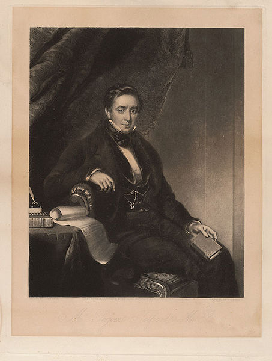
The 1841 Debate: Macaulay
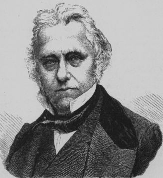
150+ Years Later: The Debate Hasn't Changed
(Though Term Has)
E.g. Jack Valenti, Forever Minus a Day and the CTEA
Philosophical Divisions
(Over Basis for Copyright)
|
Natural Right
|
vs.
|
Promotion of the Public Good
|
Do Not Want to Debate This Here
But ...
(My) Answer
Copyright is NOT a natural right but is created and maintained for the purpose of promoting and securing the public good
The Big M Word
Monopoly
The Trade-Off (or Back to Macaulay)
"It is good that authors be remunerated; and the least exceptionable way of remunerating them is by a monopoly. Yet monopoly is evil. For the sake of the good we must submit to the evil, but the evil ought not to last a day longer than is necessary for securing the good."
Our Task
(Should We Choose to Accept It)
To answer: how long should copyright last?
2. Utility and Price, Revenue and Welfare
(Or the Demand Curve Revisited)
An economist is a man who knows the price of everything and the value of nothing.
(With apologies to Oscar Wilde)
NOT TRUE
Price ≠ Value
Revenue ≠ Welfare
Best Seen With the Help of the Demand Curve
The Demand Curve
The Demand Curve
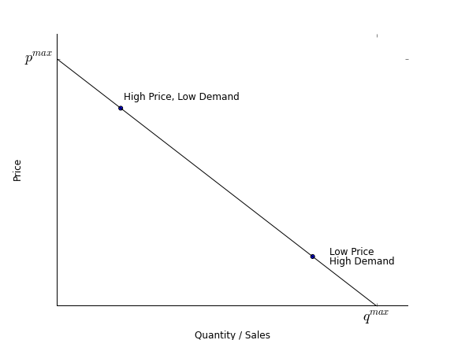
The Demand Curve
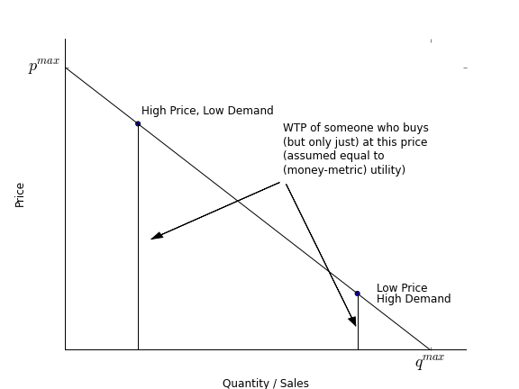
The Demand Curve
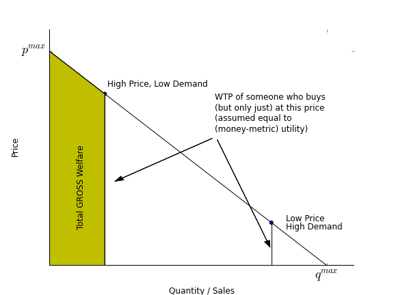
The Demand Curve
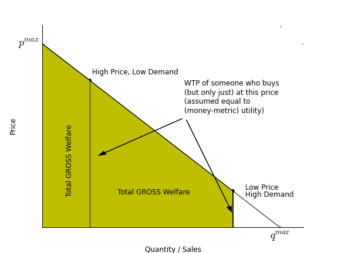
Price, Revenue and Welfare
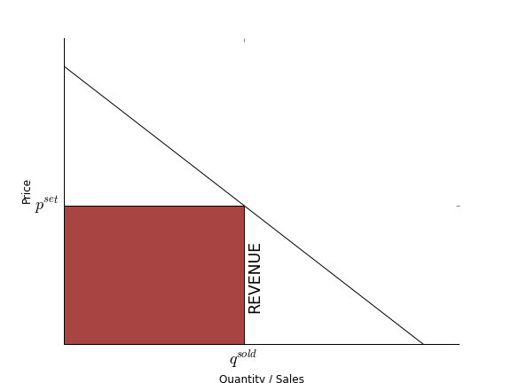
Price, Revenue and Welfare
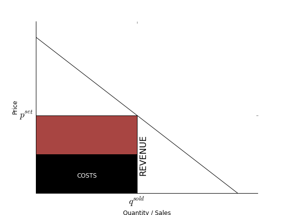
Price, Revenue and Welfare
Price, Revenue and Welfare
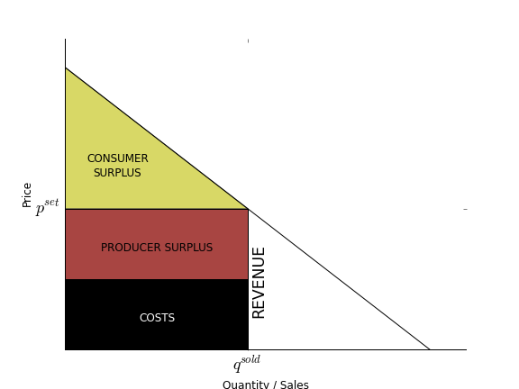
The Effect of IP
The Effect of IP
The Effect of IP
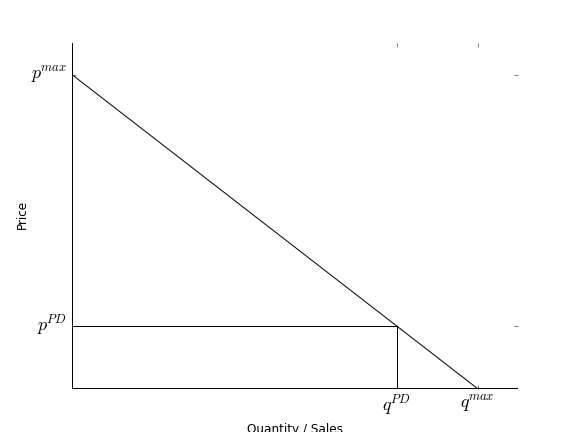
The Effect of IP
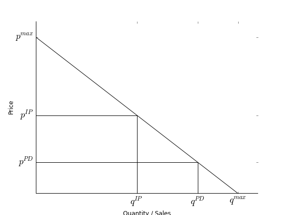
The Effect of IP
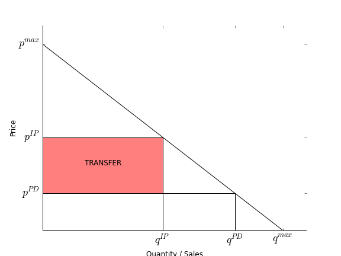
The Effect of IP
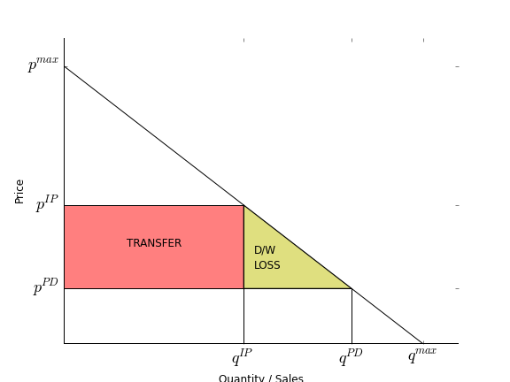
The Effect of IP
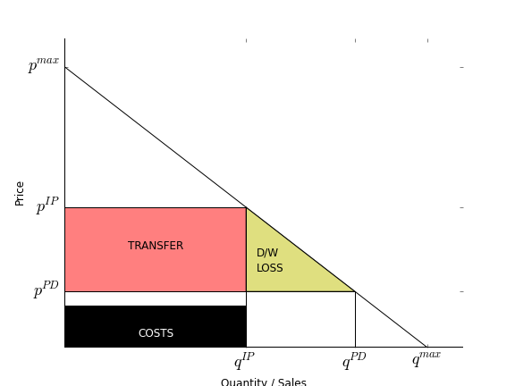
If costs already covered without (extra) IP: suffer the D/W Loss
The Effect of IP
But if (extra) IP needed: gain consumer and producer surplus (and d/w loss irrelevant)
Southey and Wat Tyler
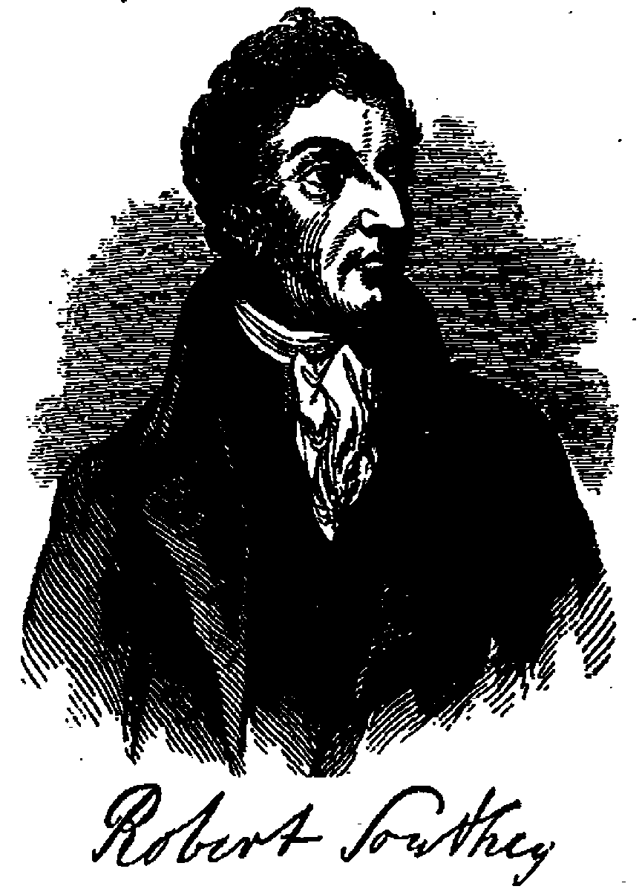
(Or: A Natural Experiment on Copyright and Access)
Sales Figures
| Date | Edition | Price (shillings) | Production |
| 1817 |
Normal price of a book of this length
| 10.15 |
500 or 1000 |
| 1817 |
Sherwood's editions |
2 |
na |
| 1817 |
Hone's Editions with explanatory notes |
1 |
na |
| 1817 |
Fairburn's Editions |
1 |
na |
| 1817 |
Bailey's edition |
1 |
na |
| 1817 |
Carlile's editiona |
na |
20000 sold |
| 1817 |
Sherwin's edition |
0.25 |
na |
|
Another Sherwin Edition |
0.16 |
na |
| Total immediate saleb |
Believed to be ~60000 |
Southey's `Wat Tyler', all pirated. (Source: St Clair, Table 16.1 p. 318)
Unenforceability of copyright -> massive reduction in price (10-80x) and huge increases in sales (60x or more)
Price Impact Today
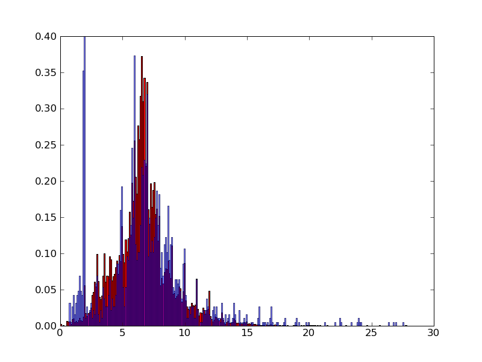
3. The Trade-Off
Works Produced over Time
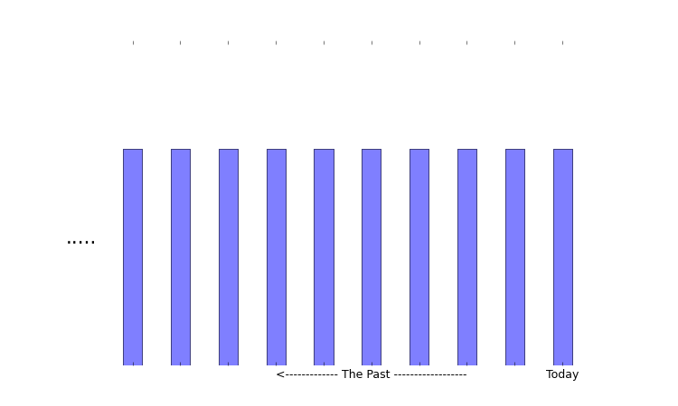
TODAY: Works available today from all past periods
NB: here no. of works produced is constant over time
Cultural Decay
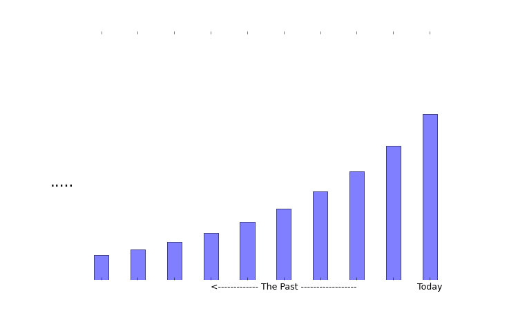
But works from the past used less today (on average) -- fashion!
Copyright Expiry and the Public Domain
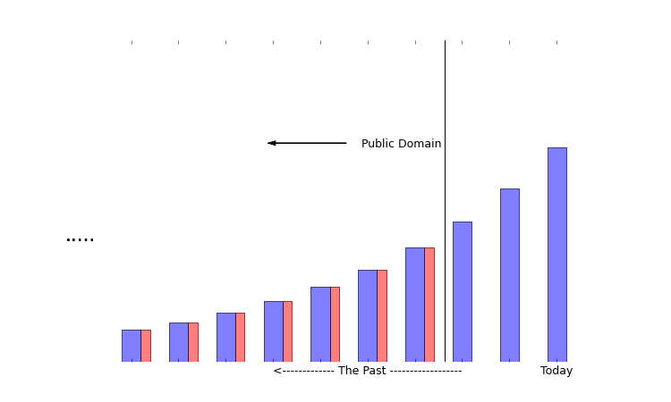
Gain deadweight 'loss' on PD works
Effect of Extension from T to T+1
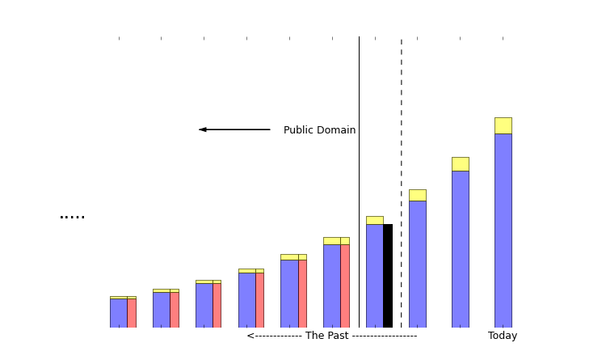
More works (yellow), but suffer d/w loss on works from time T (black)
The Trade-Off
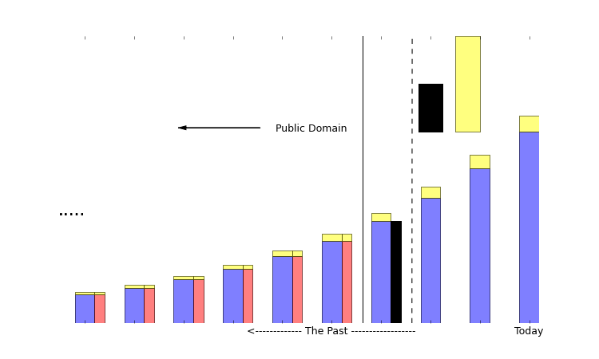
Here: gains (yellow) outweight losses (black): extension a good idea
As Term Increases: Trade-Off Worsens
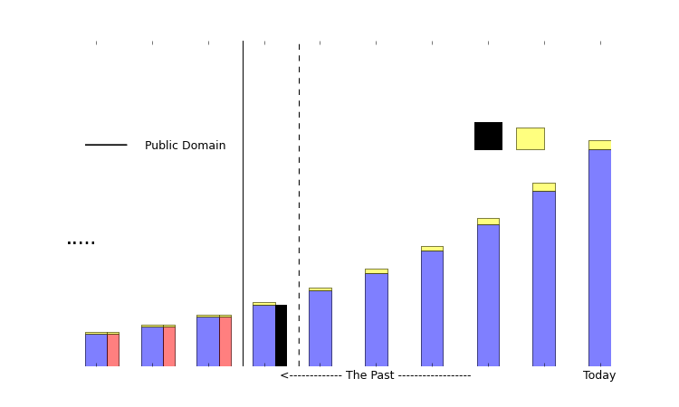
Here: gains (yellow) less than losses (black): extension a bad idea
Why?
Copyright Revenue Suffers Double Whammy
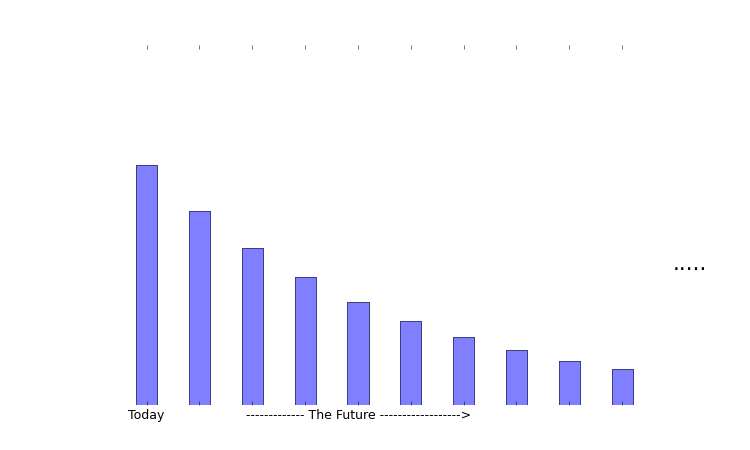
1. Cultural Decay: c. decay for welfare (looking backwards) is c. decay for owners (looking forwards)
Copyright Revenue Suffers Double Whammy
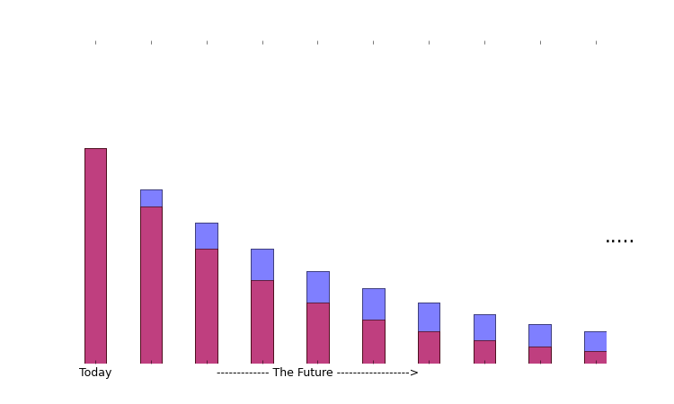
2. Present Value: $1 today = $0.3 in 20y, $0.05 in 50y @ 6% ($0.18 and $0.01 @ 9%)
Diminishing Returns
Remember we care about welfare not number of works ...
Diminishing Returns
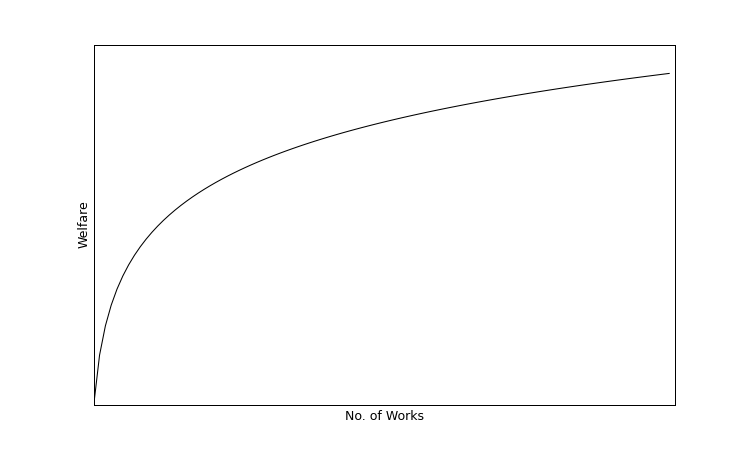
1. Diminishing quality: 'Best' works are produced first (to some extent)
Diminishing Returns
2. As we have more we need less: 'there are only so many films you can watch in a lifetime'
Deadweight Losses: Drop Much Less
No. of Works On Which D/W Losses Suffered is Going Up!
(Though of course there is cultural decay)
4. Bringing in the Data
What Do We Need to Calculate?
- Effect on work production: discount rate + cultural decay
- Effect on welfare:
- d/w loss to welfare on an avg work
- Relationship of welfare for new work to total welfare
Putting in the Numbers
- Effect on work production: discount rate (4-9%) + cultural decay (3-12%)
- Effect on welfare:
- d/w loss to welfare on an avg work (5-20%)
- Relationship of welfare for new work to avg work welfare (12%)
- Could make these media specific (but we won't)
Marginal to Average Welfare
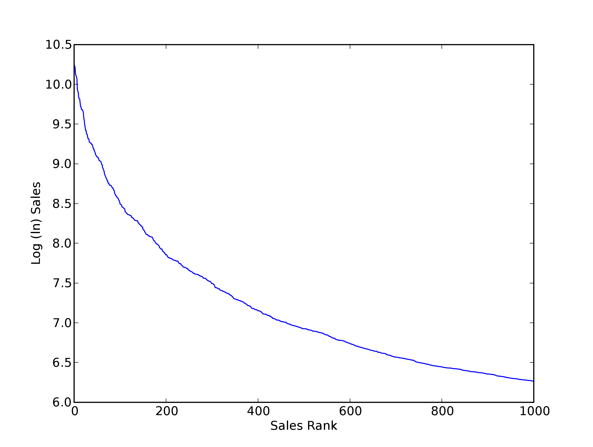
Putting it Together
Optimal Copyright and Key Parameters
| Cultural Decay Rate (%) |
Discount Rate (%) |
Ratio d/w loss to welfare |
Optimal Term |
| 2 | 4 | 0.05 | 51.8 |
| 3.5 | 5 | 0.07 | 30.7 |
| 5 | 6 | 0.1 | 18.5 |
| 6.5 | 7 | 0.15 | 10.6 |
| 8 | 8 | 0.2 | 6.5 |
Optimal Term
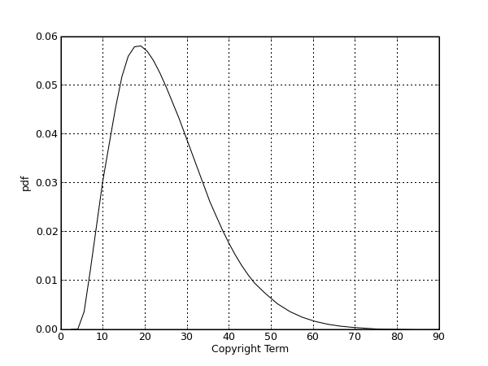
Probability Function for Optimal Term: Point Estimate of 15 years with 99% confidence interval up to 38 years
So Term Has Become Far Too Long
Most existing terms are (far) longer than this!
5. What's the Effect on the Public Domain?
The Public Domain of Books
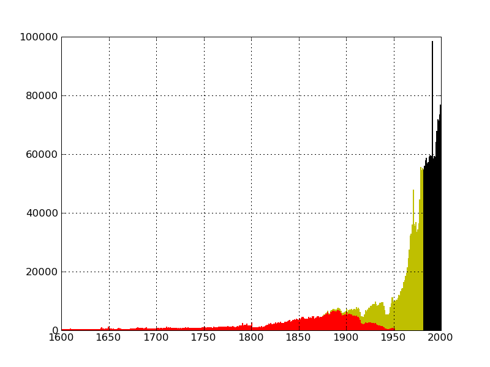
The Public Domain of books today (red), under 14+14 (yellow), and published output (black)
The Public Domain of Books
| Today | 1795 (14+14) | Today (14+14) | Today (15y) |
|---|
| Total Items | 3.46m | 179k | 3.46m | 3.46m |
| No. Public Domain | 657k | 140k | 1.2m | 2.59m |
| %tage Public Domain | 19 | 78 | 52 | 75 |
The Public Domain of Recordings
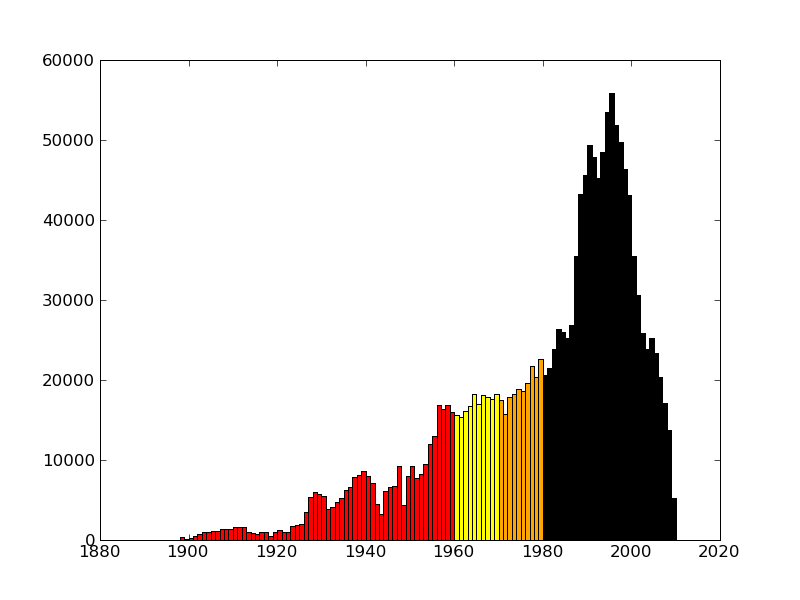
The Public Domain of recordings today (red), in the next 20 years, and all released output (black)
The Public Domain of Recordings
In PD: 301k, into PD in next decade 171k, going into PD in decade after that 191k
The (Non-Existent) Public Domain of Film
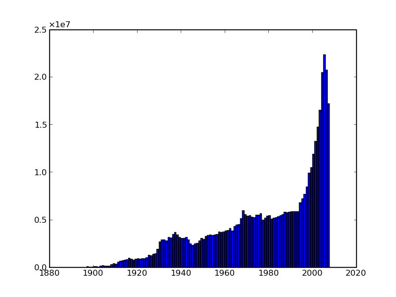
Film output (minutes). PD is essentially non-existent!
6. Summing Up
Term is Far too Long!
All existing terms are longer than those found here
5. But So What!
Macaulay lost (eventually) in 1842
And look at sound recordings today ...
Why is Term So Long?
It's All About Power!
A History of IP is Necessarily a History of the Power Relations Involved
'Rational' Analysis (Often) Has Little To Do with It